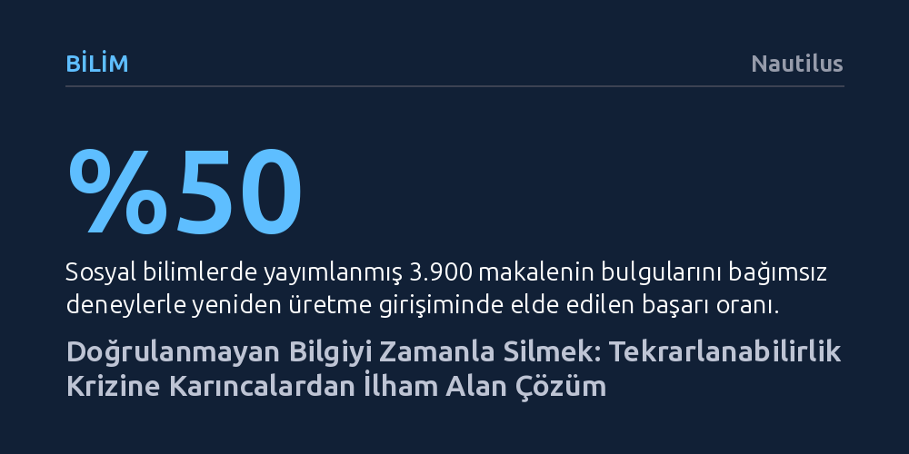

BILIM · Nautilus · 2026-09-11
Firavun karıncalarının besin tükendiğinde kendiliğinden silinen uçucu feromonları, bilimsel yayınların zamanla geçerliliğini yitirmesine karşı doğal bir model sunuyor. Araştırmacılar, doğrulanmayan teorilere duyulan güvenin zamanla buharlaştığı benzer bir mekanizmanın bilimdeki tekrarlanabilirlik krizini çözebileceğini öne sürüyor.
Bilimsel yayınların kalıcı birer nihai hakikat sayılmak yerine, karınca feromonları gibi düzenli aralıklarla yeniden test edilmedikçe geçerliliğini kaybeden dinamik izler olarak görülmesi gerektiğini gösterir.

Bugün modern bilim, temellerini sarsan derin bir güvenilirlik sorunuyla karşı karşıya bulunuyor. Sosyal bilimler alanında yayımlanmış yaklaşık 3.900 akademik makaleyi bağımsız deneylerle yeniden sınayan geniş çaplı bir araştırma, yazarların ulaştığı sonuçların yalnızca yarısının tekrarlanabildiğini gösterdi. Üstelik bu açmaz yalnızca sosyal bilimlerle sınırlı değil; saygın bilim dergisi Nature tarafından yapılan bir anket, fizikten tıbba kadar pek çok farklı disiplinde çalışan araştırmacıların yüzde 70'inin başka bilim insanlarının bulgularını laboratuvarlarında tekrarlamayı deneyip başarısız olduğunu ortaya koyuyor.
Bu tablonun arkasında hem insani zaaflar hem de mevcut bilimsel yayın ekosisteminin yapısal kusurları yatıyor. Akademisyenler ve dergiler, sürekli olarak sansasyonel ve çığır açıcı yeni bulguların peşinden koşuyor. Bir hipotezi doğrulayamayan veya önceki bir çalışmayı geçersiz kılan negatif sonuçlar ise nadiren yayımlanma şansı buluyor; zira bilim dünyasında teyit amaçlı tekrarlar yeterince takdir edilmiyor. İnsan zihni, geçmişte gerçekleşen bir örüntünün gelecekte de süreceğini varsayan tümevarım kestirmesine aşırı güvenme eğilimi taşıyor.
Daha da kritik olan problem, kağıt ve mürekkebin ya da günümüzdeki dijital veri tabanlarının doğası gereği kalıcı olmasıdır. Bir iddia bir kez yayımlandığında, kütüphanelerde ve indekslerde ebediyen bir 'bilimsel gerçek' olarak muhafaza ediliyor. Ancak biyolojik ve toplumsal sistemlerin dinamik yapısı gereği gerçekliğin zemini zamanla kayabiliyor veya ilk bulgu tamamen rastlantısal bir sapmadan ibaret kalabiliyor. Mevcut sistem, üretilen iddiaların güncelliğini ve geçerliliğini zaman içinde otomatik olarak denetleyecek bir ayıklama mekanizmasına sahip değil.
İnsan biliminin düştüğü bu kalıcılık tuzağına karşılık doğa, yüz milyonlarca yıldır çok daha zarif bir bilgi güncelleme mekanizması işletiyor. İngiliz böcekbilimci John Sudd 1950'lerde Nijerya'daki evinde firavun karıncalarını incelerken, zemine serdiği kağıtlar üzerinde karıncaların hareketlerini kurşun kalemle çizerek takip etti. Sudd, karıncaların her sabah besin kaynaklarına giderken benzer yolları kullandığını, ancak bu güzergahların haftalar içinde kademeli olarak kaydığını belirledi. Karıncalar yuvayla yiyecek arasına uçucu feromonlar salgılıyor; besin zengin kaldığı sürece iz tazelenerek güçleniyor, kaynak tükendiğinde ise kimyasal koku kendiliğinden buharlaşıp siliniyordu.
Bu strateji, karınca kolonisini merkezi bir beyin olmaksızın koordine eden bir kolektif zekaya dönüştürüyor. Bilgisayar belleğindeki bitler ya da insan beynindeki sinapslar gibi işlev gören bu uçucu moleküller, hafızanın tek tek bireylerin zihninde değil doğrudan çevrede saklandığı 'stigmerji' mekanizmasını doğuruyor. Tek bir karınca rastgele yürüyüşle besin aramaya kalktığında, hedefe olan mesafe arttıkça atması gereken adım sayısı karesel olarak fırlıyor; örneğin sadece 10 adım uzaktaki bir besine ulaşmak ortalama 100 adım gerektirebiliyor. Feromon izleri devreye girdiğinde ise tüm koloni bu yüksek arama maliyetinden kurtularak en kestirme yoldan doğrudan hedefe ulaşıyor.
Sistemin en can alıcı noktası, feromonların moleküler yapısının ve buharlaşma hızının çevre şartlarına göre evrimleşmiş olmasıdır. Besin kaynaklarının kıt ve değişken olduğu ortamlarda feromonlar hızla buharlaşacak şekilde hafif moleküllerden oluşurken, zengin ve istikrarlı kaynaklarda izler daha uzun süre kalıcı oluyor. Karıncalar da tümevarımsal bir mantık yürütüyor; ancak bir bilginin güvenilirliğini, onun ne kadar yakın zamanda yeniden teyit edildiğiyle doğrudan ilişkilendiriyor.
Firavun karıncalarının uyguladığı bu yöntem, çağdaş bilimsel yayıncılığın krizine doğrudan bir çözüm modeli sunuyor. İnsan bilimi de teorilere ve makalelere duyulan güveni, tıpkı karıncaların kimyasal izleri gibi zamanla buharlaşan dinamik bir süreç olarak kurgulayabilir. Bir akademik çalışmanın hakemden geçip basılmış olması, onun ilelebet geçerli sayılması için yeterli olmamalıdır; belirli aralıklarla bağımsız deneylerle teyit edilmeyen iddialara karşı şüphe payı zaman geçtikçe otomatik olarak artmalıdır. Yenilenmeyen antlaşmalar veya tazelenmeyen kokular gibi, desteklenmeyen teoriler de akademik cazibesini ve ağırlığını yitirmelidir.
Bu kural, araştırılan alanın değişkenlik hızına göre farklı buharlaşma katsayılarıyla işletilebilir. Örneğin insan metabolizmasının, yaşam tarzının ve çevresel faktörlerin hızla dönüştüğü beslenme biliminde önerilerin geçerliliği on yıl içinde aşınabilir; bu nedenle bu alandaki deneylerin sık aralıklarla tekrarlanması şarttır. Buna karşılık gökbilim veya temel fizikteki doğa yasaları çok daha uzun süreler boyunca sabit kalabilir ve daha yavaş bir buharlaşma takvimine tabi tutulabilir. Akademik arama motorları, bir çalışmanın en son ne zaman ve hangi aralıklarla tekrarlandığını gösteren metaverileri öne çıkarabilir; hatta taze kanıtlarla tazelenmeyen eski yayınları arama sonuçlarında geriye itebilir.
Ayrıca karıncaların yeni besin kaynakları keşfetmek için başvurduğu rastgele yürüyüşler de bilimsel yönteme yeniden kazandırılmalıdır. Katı kurallara dayalı klasik anlayış, her deneyin önceden kurgulanmış kesin bir hipoteze dayanmasını şart koşar. Oysa herhangi bir hipotez öne sürmeksizin olasılık uzayını tarayan serbest ve keşifsel deneyler, araştırmacıların beklenmedik bulgulara ulaşmasını sağlayabilir. Karıncalar bilinen yolu güçlendirmekle bilinmeyeni keşfetmek arasındaki dengeyi bu sayede kurmaktadır.
Son dönemde tekrarlanabilirlik krizini çözmek ve araştırma verimliliğini artırmak amacıyla yapay zekaya bir kurtarıcı gözüyle bakılsa da, bu yaklaşım mevcut problemleri daha da derinleştirme riski barındırıyor. Çünkü yapay zeka modelleri insanın akıl yürütme biçimleri ve mevcut akademik literatür üzerinde eğitildiği sürece, insan zihnini yanıltan bilişsel önyargıları ortadan kaldırmak yerine onları büyüterek kalıcı hale getirecektir. İnsan aklı, geçmiş eğilimleri dogmalaştırma ve faydasız ritüellere körü körüne sadakat gösterme konusunda ciddi bilişsel yanılsamalara sahiptir.
Farklı canlı türleriyle yürütülen bilişsel deneyler bu gerçeği açıkça ortaya koymaktadır. Meşhur Monty Hall olasılık probleminde, sunucunun keçi çıkan bir kapıyı elemesinden sonra kapı değiştirmek kazanma olasılığını üçte ikiye çıkarmasına rağmen insanlar yüzlerce tur boyunca ilk seçimlerinde inat etmektedir; buna karşılık güvercinler deneme yanılmayla kapı değiştirmeyi hızla öğrenerek insanlardan çok daha rasyonel davranmaktadır. Benzer şekilde, bir ödül kutusundaki gereksiz adımlar şeffaf bir düzenekle aşikar hale getirildiğinde şempanzeler anlamsız aşamaları anında terk edip doğrudan ödüle yönelirken, insan yetişkinleri ve çocukları kendilerine gösterilen faydasız adımları harfiyen taklit etmeyi sürdürmektedir.
Buradaki gerçek çözüm, laboratuvarlara hayvanları sokmak değil; onların milyonlarca yıllık evrimsel süreçte geliştirdiği bilgi filtreleme ve problem çözme stratejilerini bilimsel yöntemlerimize entegre etmektir. İnsan merkezli tek tip mantık yerine bilişsel biyoçeşitliliği esas alan biyomimetik bir yaklaşım, hem algoritmaları insan hatalarından kurtarabilir hem de bilimi kütüphane raflarında donup kalan bir arşiv olmaktan çıkarıp kendini sürekli test eden canlı bir ekosisteme dönüştürebilir.